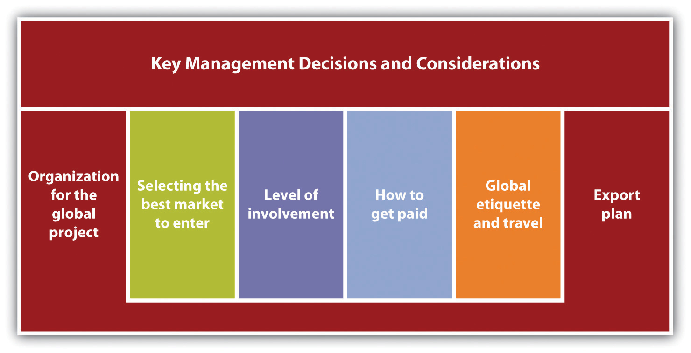
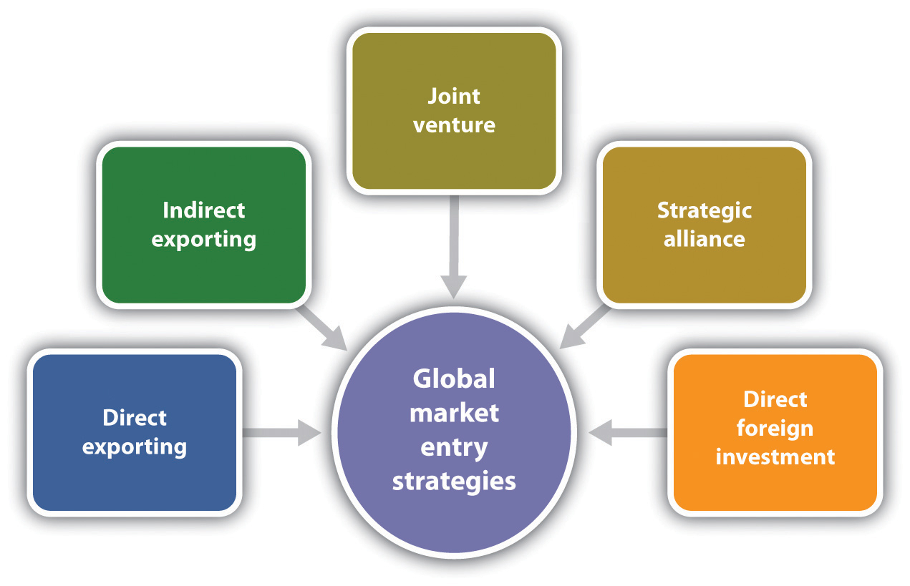

Source: Reprinted with permission from Center Rock, Inc.
Brandon Fisher, the founder of Center Rock Inc., is shown on the left side in the picture. The man to his right is Richard Soppe, the senior drilling application engineer. The number 33 is the number of Chilean miners who were rescued in 2010. Brandon and his company, now at seventy-five employees, are true American heroes.
Center Rock manufactures and distributes a complete line of air drilling tools and products. At its state-of-the-art manufacturing facility in Pennsylvania, they build stock and made-to-order products that are used by leading drilling, oil and gas, foundation, construction, roadway, and mining contractors across North America, Europe, Asia, Russia, and Australia. Fisher entered the global market four years ago as a way to expand the business. He was able to finance the expansion internally, so financing was not an issue.
Center Rock Inc., founded in 1998 by then twenty-six-year-old Brandon Fisher, began as a drilling company. He designed and built his own horizontal drilling rig and, shortly thereafter, began focusing on making Center Rock an air and rock drilling supplier and manufacturer. He recognized the need for a manufacturing company that was reactive to customer needs, with innovative products and 24/7 customer service and support. Working with his high-tech engineering and design team, Fisher created a company different from its competitors with its unique products and service capabilities.
“I love what I do,” says Fisher. “There is always a challenge in this industry to find new ways to drill into the earth, and the challenge feeds the excitement.”“About Us,” Center Rock Inc., accessed February 7, 2012, www.centerrock.com/content/about-us; e-mail correspondence with Brandon Fisher, July 28, 2011.
Although small businesses make up a disproportionately large share of the number of companies that export and import, this represents only about 1 percent of the total number of small businesses. Thus many small businesses have yet to compete globally. The opportunities are there. “So much of what America makes is in great demand,” said US Commerce Secretary Gary Locke in an interview, adding further that the growth potential for small companies is outside the United States. Dale Hayes, vice president of US marketing for UPS concurs, observing that the demand for high-quality American products is huge.Paul Davidson, “Small Businesses Look Across Borders to Add Markets,” USA Today, April 12, 2011, accessed February 7, 2012, www.usatoday.com/money/economy/2011-04-06-small-businesses-go-international.htm; Rieva Lesonsky, “Increased Opportunities for Small-Business Exports,” Small Business Trends, June 27, 2010, accessed February 7, 2012, smallbiztrends.com/2010/06/opportunities-small-business -exports.html. It may be that a small business is already competing globally because foreign-owned companies are competing in our own backyards.“Breaking into the Trade Game: A Small Business Guide to Exporting,” US Small Business Administration, 2005, accessed February 7, 2012, archive.sba.gov/idc/groups/public/documents/sba_homepage/serv_entire.pdf.
Yet the global marketplace is not relevant to most small businesses. Given that 99 percent of the small businesses in the United States are not operating globally—preferring to grow (if they want to) locally, regionally, and perhaps nationally—it is reasonable to conclude that going global will interest only a few. Those few, however, must undertake careful analyses before jumping into the global arena.
It may seem to many that the global market is the domain of the large corporations, but the statistics tell a very different story. Small businesses actually account for close to 97.6 percent of US exporters and 32.8 percent of the value of US exports as well as 97.1 percent of all identified importers and 31.9 percent of the known import value.“Profile of U.S. Importing and Exporting Companies, 2008–2009 Highlights,” US Census Bureau, April 12, 2011, accessed February 7, 2012, www.census.gov/foreign-trade/Press-Release/edb/2009/2009Highlights.pdf. Consider the following additional facts:“Profile of U.S. Importing and Exporting Companies, 2008–2009 Highlights,” US Census Bureau, April 12, 2011, accessed February 7, 2012, www.census.gov/foreign-trade/Press-Release/edb/2009/2009Highlights.pdf.
This tells us that small businesses are very active in the global marketplace, and small business success in international markets is extremely important to the welfare of the United States.“Breaking into the Trade Game: A Small Business Guide to Exporting,” US Small Business Administration, 2005, accessed February 7, 2012, archive.sba.gov/idc/groups/public/documents/sba_homepage/serv_entire.pdf. Although it is true that small businesses are major users of imported goods, the focus of this chapter is on small business exporting because exporting can be an effective way to diversify the customer base, manage market fluctuations, grow, and become more competitive.US Department of Commerce, A Basic Guide to Exporting, 10th ed. (Washington, DC: International Trade Association, 2008), i.
Small businesses are limited in the products and the services that they export. Small business exports are concentrated in four main product categories: computers and electronic products, chemicals, machinery, and transportation equipment. However, the leading product categories in terms of market share were wood products, apparel and accessories, tobacco products, beverages, and leather products.“Small and Medium-Sized Enterprises: Overview of Participation in U.S. Exports,” US International Trade Commission, January 2010, accessed February 7, 2012, www.usitc.gov/publications/332/pub4125.pdf.
Although the United States is one of the world’s largest participants in global services trade, very little information exists with respect to services exports by small businesses. What is known is that it is increasingly common for most US services firms to establish a foreign affiliateA branch or a subsidiary of the parent company established outside the national boundaries of the parent company’s home market.—a branch or a subsidiary of the parent company established outside the national boundaries of the parent company’s home market—because most services are better supplied in close proximity to the principal or final customers.“Small and Medium-Sized Enterprises: Overview of Participation in U.S. Exports,” US International Trade Commission, January 2010, accessed February 7, 2012, www.usitc.gov/publications/332/pub4125.pdf. Additionally, in some business sectors, foreign regulations may restrict the delivery of some services to affiliates only. For example, to comply with domestic solvency requirements, some countries require that personal lines of insurance be carried out only by affiliates. Another example is the protection of intellectual property rights. This is often accomplished through the services of affiliates, thus intellectual property is kept in-house.“Small and Medium-Sized Enterprises: Overview of Participation in U.S. Exports,” US International Trade Commission, January 2010, accessed February 7, 2012, www.usitc.gov/publications/332/pub4125.pdf.
What is particularly interesting is that most of the service exporting occurs in businesses with 0–19 employees, with the least service exporting done by small businesses with 300–499 employees. This may be the exact opposite of what you would expect.
The flexibility of a smaller company may make it possible to meet the demands of global markets and redefine a company’s programs more quickly than might occur in the larger multinational corporationA company that operates on a worldwide scale without ties to any specific nation or region and organized under the laws of its own country..Philip R. Cateora and John L. Graham, International Marketing (New York: McGraw-Hill Irwin, 2007), 312. A multinational corporation is a company that operates on a worldwide scale without ties to any specific nation or region; it is organized under the laws of its own country.William M. Pride, Robert J. Hughes, and Jack R. Kapoor, Business (Boston: Houghton Mifflin, 2007), 94. This flexibility of the smaller company is particularly true of the micromultinationalsTiny companies that operate globally, having a presence and people in multiple countries., a relatively new category of tiny companies that operate globally, having a presence and people in multiple countries.Anita Campbell, “The Trend of the Micro-Multinationals,” Small Business Trends, February 20, 2007, accessed February 7, 2012, smallbiztrends.com/2007/02/the-trend-of-the-micro-multinationals.html; Bernard Lunn, “Introducing the Tales of Micro-Nationals,” Small Business Trends, July 7, 2010, accessed February 7, 2012, smallbiztrends.com/2010/07/introducing-the-tales-of-micro-multinationals.html.
These micromultinationals outsource virtually everything to specialists all over the world and sell to people all over the world through the Internet.Bernard Lunn, “Introducing the Tales of Micro-Nationals,” Small Business Trends, July 7, 2010, accessed February 7, 2012, smallbiztrends.com/2010/07/introducing -the-tales-of-micro-multinationals.html. The Internet is inexpensive technology, and the services designed to help small businesses make it possible for the small company to operate across borders with the same effectiveness and efficiencies as large businesses.Anita Campbell, “Preparing Your Business to Go Global,” Small Business Trends, November 19, 2010, accessed February 7, 2012, smallbiztrends.com/2010/11/preparing-your-business-to-go-global.html.
Generation Alliance is a branding and design firm that provides services to clients all over the world. They have core employees in Australia and specialist contractors in New Zealand, the United Kingdom, Germany, Switzerland, Jamaica, Dubai, and Singapore. One of their more interesting projects was to rebrand the country of Botswana for the global market.Bernard Lunn, “Tales of Micro-Multinationals: Generation Alliance,” Small Business Trends, July 7, 2010, accessed February 7, 2012, smallbiztrends.com/2010/07/tales-of-micro-multinationals-generation-alliance.html.
Jadience sells a line of health and skincare products that has its roots in traditional oriental medicine. Their physical products are sent to customers, mostly spas, in the United States, Canada, and Mexico.Bernard Lunn, “Tales of Micro-Multinationals: Jadience,” Small Business Trends, July 15, 2010, accessed February 7, 2012, smallbiztrends.com/2010/07/tales -of-micro-multinationals-jadience.html.
Worketc operates in the large and competitive business software market. Their focus is small businesses, selling web-based customer relationship management (CRM), project management, billing, shared calendars, help desk, and document management software. The company is headquartered in Sydney, Australia, and it claims happy customers in sixteen countries. The United States accounts for 86 percent of its customers.Bernard Lunn, “Tales of Micro-Multinationals: Worketc,” Small Business Trends, July 21, 2010, accessed February 7, 2012, smallbiztrends.com/2010/07/micro -multinationals-worketc.html; “The Why of What We’re About,” Worketc, accessed February 7, 2012, www.worketc.com/about_us.
There are many reasons why small businesses should consider going global:“Benefits of Exporting,” Export.gov, March 31, 2011, accessed February 7, 2012, export.gov/about/eg_main_016807.asp; Laurel Delaney, “A How-To on Expanding Your Business Globally,” The Global Small Business Blog, January 11, 2011, accessed February 7, 2012, borderbuster.blogspot.com/2011/01/how-to-on-expanding -your-business.html; Steve Strauss, “Globalization Is Good for (Small) Business,” USA Today, May 17, 2004, accessed February 7, 2012, www.usatoday.com/money/smallbusiness/columnist/strauss/2004-05-17-globalization_x.htm; “Breaking into the Trade Game: A Small Business Guide to Exporting,” US Small Business Administration, 2005, accessed February 7, 2012, archive.sba.gov/idc/groups/public/documents/sba_homepage/serv_entire.pdf.
According to the US Small Business Administration (SBA),“Breaking into the Trade Game: A Small Business Guide to Exporting,” US Small Business Administration, 2005, accessed February 7, 2012, archive.sba.gov/idc/groups/public/documents/sba_homepage/serv_entire.pdf. US exporting businesses experience faster annual employment growth by 2 to 4 percentage points over their nonexporting counterparts. Workers employed in exporting companies have better paying jobs and better opportunities for advancement. Research has estimated that blue-collar worker earnings in firms that export are 13 percent higher than those in nonexporting plants, 23 percent higher when comparing large plants, and 9 percent higher when comparing small plants. White-collar employees also benefit from higher salaries, 18 percent more than their nonexporting counterparts. Less skilled workers also earn more at companies that export. Lastly, the benefits that all workers receive at exporting plants are 37 percent higher and include improved medical insurance and paid leave.
Why Export?
Why small businesses should consider entering the global marketplace.
There is no question that the benefits of going global are considerable. However, disadvantages or barriers must also be considered. For example, a small business will incur additional costs, such as modifying its product or its packaging (perhaps even changing the name of its product so that it does not convey negative meanings outside the United States), developing new promotional materials, administrative costs (such as hiring staff to launch the export expansion and dedicating personnel for traveling), traveling to foreign locations (very important), and shipping.Laurel Delaney, “A How-To on Expanding Your Business Globally,” The Global Small Business Blog, January 11, 2011, accessed February 7, 2012, borderbuster.blogspot.com/2011/01/how-to-on-expanding-your-business.html; Strategic Name Development, Inc., “Global Linguistic Analysis” (2011), accessed February 7, 2012, www.namedevelopment.com/global-linguistic-analysis.html. It may also be necessary for the owner to subordinate short-term profits to long-term gains, wait longer for payments, apply for additional financing, and obtain special export licenses.“Breaking into the Trade Game: A Small Business Guide to Exporting,” US Small Business Administration, 2005, accessed February 7, 2012, archive.sba.gov/idc/groups/public/documents/sba_homepage/serv_entire.pdf. There will be differences in consumer needs, wants, and usage patterns for products; differences in consumer response to the elements of the marketing mix and differences in the legal environment may conflict with those of the United States.“Global Marketing,” SmallBusiness.com, accessed February 7, 2012, smallbusiness.com/wiki/Global_marketing. Then, of course, there are cultural and language issues along with the all-too-familiar fear of the unknown.Rieva Lesonsky, “Increased Opportunities for Small-Business Exports,” Small Business Trends, June 27, 2010, accessed February 7, 2012, smallbiztrends.com/2010/06/opportunities-small-business-exports.html. A recent survey of exporting and nonexporting members of the National Small Business Association (NSBA) and the Small Business Exporters Association (SBEA) reported the following main barriers to small businesses selling their goods and/or services to foreign customers:“2010 Small Business Exporting Survey,” NSBA and SBEA, March 11, 2010, accessed February 7, 2012, www.nsba.biz/docs/2010_small_business_exporting_survey _001.pdf.
Three things were identified as the single largest challenge: worrying about getting paid (26 percent), feeling that exporting is confusing and difficult to do (24 percent), and having limited goods and/or services that are exportable (18 percent).
Richard Ginsburg in the SBA’s Office of International Trade has commented that most US small businesses simply do not understand the value of taking their business global, further noting that “the number-one barrier to trade is the psychological acceptance that global business is necessary.”Kevin Morris, “Small Business Owner Takes His Green Energy Business Global,” AllBusiness.com, April 22, 2011, accessed February 7, 2012, www.allbusiness.com/small-green-energy-business/15572754-1.html.
Small businesses also face some resource constraints that reduce their ability to export. For example, small businesses are more likely than larger firms to face scarcities of financial and human resources that limit their ability to take advantage of global opportunities. Limited personnel, the inability to meet quality standards, the lack of financial backing, and insufficient knowledge of foreign markets are important constraints affecting the ability of small businesses to export.“Breaking into the Trade Game: A Small Business Guide to Exporting,” US Small Business Administration, 2005, accessed February 7, 2012, archive.sba.gov/idc/groups/public/documents/sba_homepage/serv_entire.pdf. Fortunately, being proactive, innovative, and willing to take risks have helped small businesses overcome export impediments and improve export performance.“Breaking into the Trade Game: A Small Business Guide to Exporting,” US Small Business Administration, 2005, accessed February 7, 2012, archive.sba.gov/idc/groups/public/documents/sba_homepage/serv_entire.pdf.
The disadvantages of going global may warrant a go-slow approach, but they should not be viewed as knockout factors. If a business’s financial situation is weak, the timing may not be right for becoming an exporter…but perhaps exporting makes sense in the future. In any case, very careful thinking should precede the decision to export.

Source: SteelMaster Buildings. Reprinted with permission.
The UPS Growth through Global Trade Award recognizes businesses with fewer than five hundred employees that are excelling in international trade. The inaugural winner was SteelMaster Buildings LLC, in Virginia Beach, Virginia, a manufacturer, designer, and supplier. The UPS award was followed up by two other national awards and four regional awards related to SteelMaster’s increases in global trade plus a mention in a September 2010 speech by the former US Secretary of Commerce, Gary Locke, at a trade conference. The company earned first place in the 2011 Export Video Contest cosponsored by the SBA and VISA.
Building Beyond Our Borders
Video contest winning entry.
SBA Exporting Video Contest
Video contest finalist entries.
SteelMaster employs fifty people, excluding distributors. It exports to more than forty countries and has distributorship relationships in more than fifty international markets (e.g., South Korea, Romania, Mexico, Angola, Chile, Peru, Slovakia, South Sudan, and Australia). This distributor network has provided an important source of market differentiation. Since the company began exporting in 2006, in response to the very competitive and saturated US market, the company’s revenue has quadrupled, and exporting now represents over 20 percent of its total revenue. In addition,
Although expanding into global markets offers many important benefits, not the least of which is increased profits, it will also introduce new complexities into the operations of a small business. There are several key decisions (see Figure 15.1 "Factors Affecting the Decision to Go Global") that will need to be made, including the following:Adapted from David L. Kurtz, Contemporary Business (Hoboken, NJ: John Wiley & Sons, 2011), 121.
These decisions, and others, will be based on an assessment of the ways to export, an analysis of the industry and the business, marketing and cultural factors, legal and political conditions, currency exchange issues, and sources of financing.
A Family Business Goes Global
A small business specializing in leather-care products gets a lesson in expanding beyond its old fashioned clientele.
Figure 15.1 Factors Affecting the Decision to Go Global

Small businesses can choose from two basic ways to export: directly or indirectly.Laurel Delaney, “A How-To on Expanding Your Business Globally,” The Global Small Business Blog, January 11, 2011, accessed February 7, 2012, borderbuster.blogspot.com/2011/01/how-to-on-expanding-your-business.html. There are advantages and disadvantages of each that should be understood before making a choice.
In direct exportingExporting directly to a customer who is interested in buying a product., a small business exports directly to a customer who is interested in buying a particular product. The small business owner makes all the arrangements for shipping and distributing the product overseas, is responsible for the marketing research, and collects payment. This approach gives the owner greater control over the entire transaction and entitles him or her to higher profits—although these higher profits are accompanied by the need to invest significantly more resources and efforts (see Table 15.1 "Advantages and Disadvantages of Direct Exporting"). It also requires a significantly changed internal organizational structure, which entails more risk.Laurel Delaney, “A How-To on Expanding Your Business Globally,” The Global Small Business Blog, January 11, 2011, accessed February 7, 2012, borderbuster.blogspot.com/2011/01/how-to-on-expanding-your-business.html; Laurel Delaney, “Direct Exporting: Advantages and Disadvantages to Direct Exporting,” About.com, accessed February 7, 2012, importexport.about.com/od/DevelopingSalesAndDistribution/a/Direct-Exporting-Advantages-And -Disadvantages-To-Direct-Exporting.htm; “The Advantages of Direct Exporting,” vcShipping.com, accessed February 7, 2012, www.vcshipping.com/export/the-advantages-of-direct-exporting.html.
Table 15.1 Advantages and Disadvantages of Direct Exporting
| Advantages | Disadvantages |
|---|---|
| Potential profits are greater because intermediaries are eliminated. | It takes more time, energy, and money than an owner may be able to afford. |
| The owner has a greater degree of control over all aspects of the transaction. | It requires more “people power” to cultivate a customer base. |
| The owner knows customers, and the customers know the owner. Customers feel more secure in doing business directly with the owner. | Servicing the business will demand more responsibility from every level in the organization. The owner is held accountable for whatever happens. There is no buffer zone. |
| Business trips are much more efficient and effective because an owner can meet directly with the customer responsible for selling the product. | The owner may not be able to respond to customer communications as quickly as a local agent can. |
| The owner knows whom to contact if something is not working. The owner gets slightly better protection for trademarks, patents, and copyrights. | The owner must handle all the logistics of the transaction. If it is a technological product, the owner must be prepared to respond to technical questions and provide on-site start-up training and ongoing support services. |
| The owner is presented as fully committed and engaged in the export process and develops a better understanding of the marketplace. As a business develops in the foreign market, the owner has greater flexibility to improve or redirect marketing efforts. |
Source: Laurel Delaney, “Direct Exporting: Advantages and Disadvantages to Direct Exporting,” About.com, accessed February 7, 2012, http://importexport.about.com/od/DevelopingSalesAndDistribution/a/Direct-Exporting-Advantages-And-Disadvantages-To-Direct-Exporting.htm.
Indirect exportingEntering into an agreement with an agent, a distributor, or a traditional exporting house for the purpose of selling (or marketing and selling) the products in the target market. involves entering “into an agreement with an agent, distributor, or a traditional exporting house for the purpose of selling (or marketing and selling) the products in the target market.”Team Canada Inc., “10 Steps to Successful Exporting,” About.com, accessed February 7, 2012, sbinfocanada.about.com/od/canadaexport/a/10exportsteps.htm. Many small businesses choose this option, at least at the outset. It is the simplest approach, particularly when a business does not have the necessary human and financial resources to promote products in foreign markets in any other way (see Table 15.2 "Advantages and Disadvantages of Indirect Exporting").CBS Investment, “Advantages and Disadvantages of Direct and Indirect Exports,” CBS Investment, accessed February 7, 2012, www.cbsinvestment.com/advantages-and-disadvantages-of-direct-and-indirect-exports/; Laurel Delaney, “A How-To on Expanding Your Business Globally,” The Global Small Business Blog, January 11, 2011, accessed February 7, 2012, borderbuster.blogspot.com/2011/01/how-to-on-expanding-your-business.html. The easiest way to export indirectly is to sell to an intermediary in the United States because the business will normally not be responsible for collecting payment from the overseas customer or coordinating the shipping logistics.Laurel Delaney, Start and Run a Profitable Exporting Business (Vancouver, BC: Self-Counsel Press, 1998): chapter 8.
Table 15.2 Advantages and Disadvantages of Indirect Exporting
| Advantages | Disadvantages |
|---|---|
| Does not require a lot of organizational effort or staff workers. | Not all types of goods lend themselves to indirect exporting (e.g., technically complex goods and services). |
| The producer of the goods is subject to only small dangers and risk (e.g., a short-term drop in the exchange rate). | The profits of a business will be lower, and control over foreign sales is lost. |
| It is an almost risk-free way to begin. It demands minimal involvement in the export process. It allows the owner to continue to concentrate on its domestic business. | A business very rarely knows who its customers are, thus losing the opportunity to tailor its offerings to their evolving needs. |
| The business has limited liability for product marketing problems. There is always someone else at which to point the finger. | When an owner visits, he or she is a step removed from the actual transaction and feels out of the loop. |
| The owner learns on the fly about international marketing. Depending on the type of intermediary with which the owner is dealing, the owner does not have to be concerned with shipment and other logistics. | The intermediary might be offering products similar to a particular business’s products, including directly competitive products, to the same customers instead of providing exclusive representation. |
| A business can field-test its products for export potential. In some instances, the local agent can field technical questions and provide necessary product support. | The long-term outlook and goals for an export program can change rapidly, and if a business has put its product in someone else’s hands, it is hard to redirect efforts accordingly. |
Source: CBS Investment, “Advantages and Disadvantages of Direct and Indirect Exports,” CBS Investment, accessed February 7, 2012, http://www.cbsinvestment.com/advantages-and-disadvantages-of-direct-and-indirect-exports/; Laurel Delaney, Start and Run a Profitable Exporting Business (Vancouver, BC: Self-Counsel Press, 1998), chapter 8.
Before jumping into the global pond, it is a good idea to identify where an industry currently is and then look at the trends and directions that are predicted over the next three years. This will be true whether a business is only on the ground, only online, or both brick and click.
A business should try to determine how competitive an industry is in the global market.Laurel Delaney, “A How-To on Expanding Your Business Globally,” The Global Small Business Blog, January 11, 2011, accessed February 7, 2012, borderbuster.blogspot.com/2011/01/how-to-on-expanding-your-business.html. Try to get as good a picture of the market as possible because the better informed a business is, the better its chances of a successful global entry. Learn a product’s potential in a given market, where the best prospects for success seem to be, and common business practices.“6 Steps to Begin Exporting,” US Small Business Administration, accessed February 7, 2012, www.sba.gov/content/6-steps-begin-exporting.
A small business owner may be reticent about conducting market research before going global, particularly if domestic research efforts have been limited or nonexistent. However, the global market is a very different animal compared to the domestic market. It is even more important to conduct thorough market research to help identify possible risks in advance so that the appropriate steps can be taken to avoid mistakes. This ultimately portrays the business as forward-thinking, trustworthy, and credible.Tricia Phillips, “Biz Bureau Gives Top Tips on Going Global with Your Business,” Mirror, January 26, 2011, accessed February 7, 2012, www.mirror.co.uk/advice/money/2011/01/26/biz-bureau-gives-top-tips-on-going-global-with-your-business-115875 -22875517.
Other sources to be consulted include people in the same business or industry, industry-specific magazines, trade fairs, seminars,Laurel Delaney, “A How-To on Expanding Your Business Globally,” The Global Small Business Blog, January 11, 2011, accessed February 7, 2012, borderbuster.blogspot.com/2011/01/how-to-on-expanding-your-business.html. and export training and technical assistance that is available to small businesses through the states and the federal government. The Federation of International Trade Associations is a global trade portal that provides trade leads, market research, links to eight thousand import/export websites, and even travel services. WorldBid.com describes itself as the largest network of international trade marketplaces in the world, providing trade leads and new business contacts.“Session 11: Global Expansion,” My Own Business, accessed February 7, 2012, www.myownbusiness.org/global_expansion/index.html.
The Internet makes it possible to gather and view tremendous amounts of information. If a business is thinking seriously about going global, there is no better time to take advantage of this quick-and-easy access than now.
Knowing the Export Environment
Government experts identify challenges and debunk some myths.
It is important to honestly self-evaluate a business to determine whether it is really ready to go global or not…or at least not yet.“Is Your Small Business Ready to Go Global?,” Small Business CEO, February 7, 2011, accessed February 7, 2012, www.smbceo.com/2011/02/07/global-business-2. If a business is thinking about expanding globally, it is probably already doing something right to have reached this point. However, that does not preclude the importance of assessing its strengths and its weaknesses to determine the approach that should be taken in the global market.Laurel Delaney, “A How-To on Expanding Your Business Globally,” The Global Small Business Blog, January 11, 2011, accessed February 7, 2012, borderbuster.blogspot.com/2011/01/how-to-on-expanding-your-business.html. This will be true no matter what role e-commerce plays in a business. Even a micromultinational business should assess its strengths and its weaknesses, although its instantaneous presence as a global business means that the assessment must be done at start-up and then must continue as products and services move from country to country.
There are several issues that should be addressed. The following are some of the questions that should be asked:Laurel Delaney, “A How-To on Expanding Your Business Globally,” The Global Small Business Blog, January 11, 2011, accessed February 7, 2012, borderbuster.blogspot.com/2011/01/how-to-on-expanding-your-business.html; “Starting an Export Business,” Gaebler.com, May 19, 2011, accessed February 7, 2012, www.gaebler.com/Starting-an-Export-Business.htm; William M. Pride, Robert J. Hughes, and Jack R. Kapoor, Business (Boston: Houghton Mifflin, 2008), 96; “Is Your Small Business Ready to Go Global?,” Small Business CEO, February 7, 2011, accessed February 7, 2012, www.smbceo.com/2011/02/07/global-business-2.
If a product is an industrial good, a business will want to know things such as what firms will likely use it, whether its use or life might be affected by climate, and whether geography will present transportation problems that will affect purchase. In the case of a consumer good, a business will want to know who will consume it; how frequently it will be purchased; whether it will be restricted abroad; whether climate or geography will negatively impact accessibility for purchase; and—perhaps most importantly—whether it conflicts with traditions, taboos, habits, or the beliefs of customers abroad.Laurel Delaney, “A How-To on Expanding Your Business Globally,” The Global Small Business Blog, January 11, 2011, accessed February 7, 2012, borderbuster.blogspot.com/2011/01/how-to-on-expanding-your-business.html.
A helpful tool to assess readiness is the export questionnaire available at www.export.gov/begin/assessment.asp. This questionnaire highlights characteristics common to successful exporters and identifies areas that need to be strengthened to improve export activities.
Where Will Your Next Customer Come From?
Small businesses looking to grow should look beyond US borders to find new customers.
Just as it is necessary to offer a different marketing mix (see Figure 15.2 "The Marketing Mix") for different target markets, it will generally be necessary to adapt the marketing mix to the global market in general and different countries in particular. A business’s unique value propositionThe set of benefits offered to customers to satisfy their needs and wants consisting of some combination of products, services, information, and experiences. (the set of benefits offered to customers to satisfy their needs and wants consisting of some combination of products, services, information, and experiences)Philip Kotler and Kevin Lane Keller, Marketing Management (Upper Saddle River, NJ: Pearson Prentice Hall, 2009), 13. is what will differentiate one marketplace offering from the competition. Given the more diversified competition in the global marketplace, identifying the value proposition is even more critical—and most likely more difficult—than in the domestic market.Jennifer LeClaire, “How to Take Your Small Business Global,” E-Commerce Times, June 20, 2006, accessed February 7, 2012, www.ecommercetimes.com/story/50910.html%20?wlc=1305842348.
Figure 15.2 The Marketing Mix

The ideal situation is when a product developed for the US market can be sold in a foreign country without any changes. Although some kinds of products can be introduced with no changes (e.g., cameras, consumer electronics, and many machine tools),Philip Kotler and Kevin Lane Keller, Marketing Management (Upper Saddle River, NJ: Pearson Prentice Hall, 2009), 611. most products usually have to be altered in some way to meet conditions in a foreign market.John M. Ivancevich and Thomas N. Duening, Business: Principles, Guidelines, and Practices (Mason, OH: Atomic Dog Publishing, 2007), 49. From a small business perspective, the owner will want to market products that do not require drastic changes to be accepted. Relatively minor packaging changes, such as size or the language on the package, can be made inexpensively, but more drastic changes should be avoided. If a product must be changed drastically to market it globally, conduct an in-depth cost analysis to determine whether the additional costs will outweigh the anticipated benefits.“All About Global Marketing,” BusinessKnowledgeSource.com, accessed February 7, 2012, www.businessknowledgesource.com/marketing/all_about_global_marketing _032164.html. If a product is a food or a beverage, for example, is the business prepared to make the changes necessary to appeal to widely varying tastes?Arundhati Parmar, “Dependent Variables: Sound Global Strategies Rely on Certain Factors,” Marketing News, September 2002, 2.
Products need to be adapted for many reasons, including the following:Philip R. Cateora and John L. Graham, International Marketing (New York: McGraw-Hill Irwin, 2007), 341, 351, 353; “Global Linguistic Analysis,” Strategic Name Development, accessed February 7, 2012, www.namedevelopment.com/global-linguistic -analysis.html.
The less economically developed a market happens to be, the greater may be the need for product adaptation. Research has found that only one in ten products can be marketed in developing countries without some kind of product adaptation.Philip R. Cateora and John L. Graham, International Marketing (New York: McGraw-Hill Irwin, 2007), 341.
It is important to know that cultural and social differences are intertwined with the perceived value and importance that a market places on a product.Philip R. Cateora and John L. Graham, International Marketing (New York: McGraw-Hill Irwin, 2007), 343. “A product is more than a physical item: It is a bundle of satisfactions (or utilities) that the buyer receives. These include its form, taste, color, odor, and texture; how it functions in use; the package; the label; the warranty; the manufacturer’s and retailer’s servicing; the confidence or prestige enjoyed by the brand; the manufacturer’s reputation; the country of origin; and any other symbolic utility received from the possession or use of the goods. In short, the market relates to more than a product’s physical form and primary function.”C. K. Prahalad, The Fortune at the Bottom of the Pyramid (Philadelphia: Wharton School Publishing, 2005), as cited in Philip R. Cateora and John L. Graham, International Marketing (New York: McGraw-Hill Irwin, 2007), 343.
The values, customs, rituals, language, and taboos within a culture will determine the acceptability of a product or a service. Cultural sensitivity is particularly important in cyberspace. Website visitors may come from anywhere in the world. Icons and gestures that seem friendly to US visitors may shock people from other cultures. For example, a high-five hand gesture would be insulting to a visitor from Greece.David L. Kurtz, Contemporary Business (Hoboken, NJ: John Wiley & Sons, 2011), 109. Knives and scissors should not be given as gifts in South America because they symbolize the severing of a friendship.David L. Kurtz, Contemporary Business (Hoboken, NJ: John Wiley & Sons, 2011), 109.
The psychological attributesFeatures that have little to do with the primary function of a product but add value to customer satisfaction. of a product (features that have little to do with the primary function of the product but add value to customer satisfaction, e.g., color, size, design, brand name, and price)Philip R. Cateora and John L. Graham, International Marketing (New York: McGraw-Hill Irwin, 2007), 343. can also vary across cultures, and the meaning and the value assigned to those attributes can be positive or negative. It may be necessary to adapt the nonphysical features of the product to maximize the positive meanings and eliminate the negative ones.Philip R. Cateora and John L. Graham, International Marketing (New York: McGraw-Hill Irwin, 2007), 343. When Coca-Cola, the number one global brand, introduced Diet Coke to Japan, it found that Japanese women do not like to admit to dieting. Further, the idea of diet was associated with medicine and sickness. Coca-Cola ended up changing the name to Coke Light.Philip R. Cateora and John L. Graham, International Marketing (New York: McGraw-Hill Irwin, 2007), 343. This happened in Europe as well, so if a product is associated with weight loss, a business must be very careful with its marketing.
The package for a product includes its design, colors, labeling, trademarks, brand name, size, product information, and the actual packaging materials. There are many reasons why a package may have to be adapted for a particular country. There may be laws that stipulate a specific type of bottle or can, package sizes, measurement units, extraheavy packaging, and the use of particular words on the label.Philip R. Cateora and John L. Graham, International Marketing (New York: McGraw-Hill Irwin, 2007), 352. In some cases, the expense of package adaptation may be cost prohibitive for entering a market. Consider the following examples:Philip R. Cateora and John L. Graham, International Marketing (New York: McGraw-Hill Irwin, 2007), 352–53.
The message here is clear. Before going global with a product, examine the packaging so that each element is in compliance with appropriate laws and regulations so that nothing will offend prospective customers.
Canada’s oldest candymaker, Ganong Brothers, is located about one mile from Maine. The company chairman, David Ganong, can see the US border from his office window. You would think it would be easy for Ganong Brothers to sell to the US market. Not so. In Canada, nutritional labels read 5 mg, with a space between the number and the unit of measurement. Ganong’s jellybeans cannot get into America unless the label reads 5mg, without the space. This difference, as well as differences in Canada’s nutritional guidelines, means that Ganong must produce and package its US products separately, which reduces its efficiency. Small differences can and do have a significant effect on cross-border trade. This may be the reason why there is not as much trade between the United States and Canada as you would think.Ryan Underwood, “Creating a Smart Export Strategy,” Inc., May 3, 2011, accessed February 7, 2012, www.inc.com/magazine/20110501/author-pankaj-ghemawat -on-global-expansion-for-small-exporters.html. This notwithstanding, however, Canada remains the number one exporting destination for US small businesses.“Small and Medium-Sized Enterprises: Overview of Participation in U.S. Exports,” US International Trade Commission, January 2010, accessed February 7, 2012, www.usitc.gov/publications/332/pub4125.pdf.
As part of product preparations, a business will need to make its website ready for international business. Remember that the website is a very cost-effective way to sell a product or a service across borders. Here are four ways to ready the website:Anita Campbell, “How to Make Your Website Ready for International Business,” Small Business Trends, October 29, 2010, accessed February 7, 2012, smallbiztrends.com/2010/10/website-ready-international-business.html.
Finding Your First Customer
To find the first customer, visit the selected country.
We often hear it said that something was lost in the translation. Here are some global marketing examples of translation blunders. Something important to note is that most of these blunders were committed by the “big guys,” companies that are extremely marketing-savvy—proof positive that no one is immune from this kind of error.
Given that misunderstanding foreign languages can destroy a brand, it is worth the investment to hire someone who is proficient in the native language in the intended market—including the use of slang. This will help a small business avoid a fatal mistake because it does not have the resources of the big companies to fix the mistakes.Jeffrey Gangemi, “Avoiding Faux Pas When Exporting,” Bloomberg BusinessWeek, June 27, 2007, accessed February 7, 2012, www.BusinessWeek.com/smallbiz/content/jun2007/sb20070627_897013.htm?campaign_id=rss_smlbz. This concern must be extended to the web presence as well because the website is an integral part of the product.
Pricing for the global market is not an easy thing to do. Many factors must be taken into account, the first of which are traditional price considerations: fixed and variable costs, competition, company objectives, proposed positioning strategies, the target group, and willingness to pay.“The International Marketing Mix,” Learn Marketing, accessed February 7, 2012, www.learnmarketing.net/internationalmarketingmix.htm. Add to these factors things such as the additional costs that are incurred due to taxes, tariffs, transportation, retailer margin, and currency fluctuation risks;John M. Ivancevich and Thomas N. Duening, Business: Principles, Guidelines, and Practices (Mason, OH: Atomic Dog Publishing, 2007), 40; Philip Kotler and Kevin Lane Keller, Marketing Management (Upper Saddle River, NJ: Pearson Prentice Hall, 2009), 616. the nature of the product or industry, the location of production facility, and the distribution system;Eric Mitchell, “The Pricing Advisor,” The Pricing Advisor Newsletter, accessed February 7, 2012, members.pricingsociety.com/articles/Pricing-for-Global-Markets.pdf. the psychological effects of price; the rest of the marketing mix; and the price transparency created by the Internet“The International Marketing Mix,” Learn Marketing, accessed February 7, 2012, www.learnmarketing.net/internationalmarketingmix.htm. and a business can begin to appreciate the challenges of global price setting. About the only thing that can be seen as a certainty is that a small business should expect the price of its product or service to be different, usually higher, in a foreign market.John M. Ivancevich and Thomas N. Duening, Business: Principles, Guidelines, and Practices (Mason, OH: Atomic Dog Publishing, 2007), 50. The specifics of that difference need to be worked out carefully, with thorough analysis.
Setting the right price for a product or a service is critical to success. It will be a challenge to navigate the pricing waters of each different country—to learn why, for example, a product sells for $16 in the United States but $23 in Britain.
As challenging as distribution may be for a small business in the domestic market, it is even more so for the global market. No matter the product, it has to go through a distribution processThe physical handling and distribution of goods, the passage of ownership or title, and the buying and selling negotiations between producers and middlemen and middlemen and customers.—the physical handling and distribution of goods, the passage of ownership or title, and the buying and selling negotiations between producers and middlemen and middlemen and customers.Philip R. Cateora and John L. Graham, International Marketing (New York: McGraw-Hill Irwin, 2007), 396. It would make sense to be able to take advantage of existing transportation systems, retailers, and suppliers to sell goods and provide services. Unfortunately, adequate distribution systems do not exist in all countries, so a business will need to develop ways to get products to customers in as cost-effective a manner as possible.John M. Ivancevich and Thomas N. Duening, Business: Principles, Guidelines, and Practices (Mason, OH: Atomic Dog Publishing, 2007), 50.
Getting Your Product from Here to There
Small businesses rely on freight forwarding and shipping experts to move products around the world.
Before deciding on a channel or channels of distribution, a business needs information. The following are some basic questions as a starting point:
Understanding Partnerships and Distributors
Partnerships help many thriving US businesses overseas.
Identifying Marketing Channels/Activities
How research and planning inform business growth.
In the final analysis, the behavior of distribution channel members will be the result of the interaction between cultural, economic, political, legal, and marketing environments. A small business that is looking to go global—or is already there—will encounter channel structures that range from a minimally developed marketing infrastructure, such as in emerging markets, to highly complex, multilayered systems, such as in Japan.Philip R. Cateora and John L. Graham, International Marketing (New York: McGraw-Hill Irwin, 2007), 396.
When deciding to enter the global marketplace, a determination must be made as to whether the current channel structure in the selected country (or countries) will meet the business’s needs or whether some additional arrangements will be needed. The means of distribution will necessarily be a country-by-country decision. No matter the arrangement, however, figure on the costs being greater than in the United States.
It is understandable that a small business owner may want to use the same integrated marketing communications (IMC) programs used in the home market to inform customers in foreign markets and persuade them to buy. This “one voice” approach offers the advantage of enabling a business or a product to gain broader recognition in the global marketplace; it also helps reduce costs, minimize redundancies in personnel, and maximize the speed of implementation.John M. Ivancevich and Thomas N. Duening, Business: Principles, Guidelines, and Practices (Mason, OH: Atomic Dog Publishing, 2007), 50; “Global Marketing,” SmallBusiness.com, accessed February 7, 2012, smallbusiness.com/wiki/Global_marketing. However, things are not that easy. Cultural, social, language, and legal differences from country to country will usually make it necessary to modify IMC messages to not offend current or prospective customers. Modification is more of a challenge for the small business because the resources needed to make the changes are more limited.
A business communicates with its customers through some combination of its website, advertising, publicity, public relations, sales promotion, sales personnel, e-mail, and social media. The actual mix will be a function of the selected country or countries. For example, in some less-developed countries, the major portion of the promotional effort in rural and less-accessible parts of the market is sales promotion; in other markets, product sampling works especially well when the product concept is new or has a very small market share.Philip R. Cateora and John L. Graham, International Marketing (New York: McGraw-Hill Irwin, 2007), 468. In Saudi Arabia, there is an appreciation for fancy packaging, and point-of-sale advertising elicits the best reaction.Marian Katz, “No Women, No Alcohol; Learn Saudi Taboos before Placing Ads,” Abstracts, Business International, 1986, accessed June 1, 2012, www.faqs.org/abstracts /Business-international/No-women-no-alcohol-learn-Saudi-taboos-before-placing-ads.html. However, the appropriateness of IMC activities for a small business will depend on the product being marketed, the industry in which it is competing, and the country in which it hopes to sell the product.
Of all the four Ps, decisions involving advertising are thought to be those most often affected by cultural differences in foreign markets. Consumers respond in terms of their culture, style, feelings, value systems, attitudes, beliefs, and perceptions. Because advertising’s function is to interpret or translate the qualities of products and services in terms of consumer needs, wants, desires, and aspirations, emotional appeals, symbols, persuasive approaches, and other characteristics in an advertisement must coincide with cultural norms if the ad is to be effective.Philip R. Cateora and John L. Graham, International Marketing (New York: McGraw-Hill Irwin, 2007), 473.
Examples abound of international advertising mistakes that have offended different cultures. Three are presented here. Although they are linked to large corporations, there are lessons to be learned by small businesses. No business is immune from making mistakes from time to time.
The reality of international advertising is that its cost and the effort required to prepare and place the ads correctly may be prohibitive for most small businesses, therefore pushing the emphasis on other elements of the IMC mix. However, a business will not know that for sure until it does the proper research before making a decision. Consider the characteristics of the target market, how the market uses media in that country, and which media are actually available. Some countries do not have commercial television, and some do not have advertising in newspapers. There will be newspaper and magazine circulation differences from country to country; in countries with a low literacy rate, radio and television advertising (if available) will be more effective than print media.John M. Ivancevich and Thomas N. Duening, Business: Principles, Guidelines, and Practices (Mason, OH: Atomic Dog Publishing, 2007), 50.
Fortunately, small businesses that want to go global can look to social media for assistance. The social web is a low-cost way to catapult a small business brand into the global arena.Susan Gunelius, “Building Your Brand with Social Media,” Reuters, January 4, 2011, accessed February 7, 2012, www.reuters.com/article/2011/01/05/idUS16245956220110105. Facebook, the most popular social networking site in the world, has developed a self-serve advertising tool that has created the greatest interest among small businesses that might not have had the means to launch a global advertising campaign before. This would be a good place to start—along with a map of the world’s most popular media applications country by country and culture by culture, which is available at www.appappeal.com/the-most-popular-app-per-country/social-networking.
No matter the mix of the IMC program, and no matter whether a business is business-to-consumer (B2C) or B2B, the way a business communicates internationally will be a major determinant of success. Each IMC component is a communication channel in its own right. A business must consider the appropriateness of each message in each channel. For example, is the message adequate? Does it contain correct cultural interpretations? Are the colors and graphics right? In the case of advertising, have the media been chosen that match the behavior of the intended audience? Have you correctly assessed the needs and wants or the thinking processes of the target market?Adapted from Philip R. Cateora and John L. Graham, International Marketing (New York: McGraw-Hill Irwin, 2007), 479.
Careful consideration of these and other communication issues will not guarantee success, but it should help reduce the chances of making a major marketing blunder.
It is impossible for any small business to know all the laws that pertain to exporting from the United States. Thus it is important to consult an attorney who is knowledgeable about the legal implications of globalization: international trade laws, tax laws, local regulations,“Small Business Globalization: Should You Pursue Global Markets?,” more-for-small business.com, accessed February 7, 2012, www.more-for-small-business.com/small-business-globalization-should-you-pursue-global-markets.html. international border restrictions, customs rules, and duties and taxes.Paul Demery, “Anchors Aweigh,” Internet Retailer, January 31, 2008, accessed February 7, 2012, www.internetretailer.com/2008/01/31/anchors-aweigh.
To varying degrees, each small business must be concerned with the following. However, this list is not exhaustive; it is a sampling only.
Understanding Legal Considerations
Important legal considerations for small businesses that want to go global.
In addition to legal considerations, no small business can conduct global business without understanding the influence of the political environments in which it will be operating.Philip R. Cateora and John L. Graham, International Marketing (New York: McGraw-Hill Irwin, 2007), 158. Every nation has the sovereign right to grant or withhold permission to do business within its political boundaries and control where its citizens do business, so the political environment of countries is necessarily a critical concern to any small business.Philip R. Cateora and John L. Graham, International Marketing (New York: McGraw-Hill Irwin, 2007), 158. Political issues include the stability of government policies (a stable and friendly government being the ideal), the forms of government (with some being more open to foreign commerce than others), political parties and their influence on economic policy, the degree of nationalism (the greater the nationalism, the greater the bias against foreign business and investments may be), fear and/or animosity that is targeted toward a specific country, and trade disputes.Philip R. Cateora and John L. Graham, International Marketing (New York: McGraw-Hill Irwin, 2007), 159-165. One or all these things create political risk that must be assessed. The most severe political risk is confiscation, the seizing of a company’s assets without payment.Philip R. Cateora and John L. Graham, International Marketing (New York: McGraw-Hill Irwin, 2007), 166.
The exchange rateThe rate at which one country’s currency can be exchanged for the currency of another country. is the rate at which one country’s currency can be exchanged for the currency of another country.John M. Ivancevich and Thomas N. Duening, Business: Principles, Guidelines, and Practices (Mason, OH: Atomic Dog Publishing, 2007), 39. For example, assume that on a particular day, $1 exchanged for 0.75643 euros and 49.795 Indian rupees.“Euro,” X-rates.com, accessed March 5, 2012, www.x-rates.com/d/EUR/table.html;%20X-rates.com; “Indian Rupee,” X-Rates, accessed March 5, 2012, www.x-rates.com/d/INR/table.html. These exchange rates then changed the next day, when $1 exchanged for 0.6891 euros and 49.845 Indian rupees, meaning that the value of the US dollar increased in value with respect to the euro and decreased in value against the Indian rupee. Currency exchange rates change daily, and they are important because currency fluctuations can present additional problems for the small business looking to go global. The appreciation and depreciation of a currency will have an effect on the prices of goods and services. For example, as the dollar declines in value against the euro, the price of goods and services from the European Union for US customers will increase, likely reducing their purchases.John M. Ivancevich and Thomas N. Duening, Business: Principles, Guidelines, and Practices (Mason, OH: Atomic Dog Publishing, 2007), 39. The following are other implications of exchange rate fluctuations:Philip R. Cateora and John L. Graham, International Marketing (New York: McGraw-Hill Irwin, 2007), 537; David L. Kurtz, Contemporary Business (Hoboken, NJ: John Wiley & Sons, 2011), 113.
Different strategies may be needed when the dollar is weak versus when it is strong. For example, when the US dollar is weak, a business should stress price benefits. When the dollar is strong, a business can engage in nonprice competition by improving quality, delivery, and after-sale services.Philip R. Cateora and John L. Graham, International Marketing (New York: McGraw-Hill Irwin, 2007), 538. To navigate these challenging currency exchange waters, it will be necessary to tap into accounting and finance expertise.
How a business finances an export project is often a critical factor in its success. Financing decisions extend to working capital and export transactions. Working capital is needed to finance operations before and after a sale, and money is needed to sustain a business until it is paid for the goods and services that have been provided (export transactions). The International Trade Association in the US Department of Commerce identifies the following factors as important to consider when making financing decisions.US Department of Commerce, A Basic Guide to Exporting, 10th ed. (Washington, DC: International Trade Association, 2008), 193–94.
Small businesses have reported that problems with access to financing for their exporting operations are a major barrier to exporting. The difficulties they experience in obtaining both trade finance and working capital often prevent small businesses from financing purchases by foreign buyers. This encourages foreign buyers to choose suppliers that are able to extend credit. Small businesses must also face the perception of lending institutions that they are a higher risk than larger companies coupled with a lack of familiarity with exporting by community banks.“Small and Medium-Sized Enterprises: Overview of Participation in U.S. Exports,” US International Trade Commission, January 2010, accessed February 7, 2012, www.usitc.gov/publications/332/pub4125.pdf.
Despite any anticipated difficulties, small businesses need to find export financing. They can look for financing in several places. The first place to look is internally. Does it already have the funds to finance global efforts? If the answer is yes, then all is well. This was the case for Center Rock, the small business featured at the beginning of this chapter. If the answer is no, which will most likely be the case, it will be necessary to look for external financing. A range of options is available for small businesses to consider (see Table 15.3 "Sources of Export Financing for the Small Business"). As you will see, most financing sources are available from the government. A small business must become familiar with the financing, insurance, and grant programs that are available to help it finance transactions and carry out export operations.“6 Steps to Begin Exporting,” US Small Business Administration, accessed February 7, 2012, www.sba.gov/content/6-steps-begin-exporting.
Table 15.3 Sources of Export Financing for the Small Business
| Source | Information |
|---|---|
| Extending credit to foreign buyers working with commercial banks | Liberal financing can enhance export competitiveness, but extending credit must be weighed carefully. Some commercial bank services used to finance domestic business, including revolving lines of credit for working capital, are often needed to finance export sales until payment is received. However, commercial banks prefer to establish an ongoing business relationship instead of financing solely on the basis of an individual order. Most US banks do not lend against export orders, export receivables, or letters of credit. |
| Export Express 7(a) Loan Programs | Offered by the SBA, this streamlined program helps small businesses develop or expand their export markets. A business may be able to obtain SBA-backed financing for loans and lines of credit up to $500,000. |
| Export Working Capital Program (EWCP) 7(a) Loan Programs | This SBA loan program targets small businesses that are able to generate export sales but need additional working capital to support these sales. The SBA provides lenders guarantees of up to 90 percent on export loans to ensure that qualified exporters do not lose viable export sales due to a lack of working capital. |
| International Trade Loan Program 7(a) Loan Programs | Loans are available for businesses that plan to start or continue exporting or have been adversely affected by competition from imports. The loan proceeds must enable the borrower to be in a better position to compete. The program offers borrowers a maximum SBA-guaranteed portion of $1.75 million. |
| Export-Import Bank | An independent federal agency that provides working capital loan guarantees, export-credit insurance, and other forms of financing for US exporters of all sizes. The funds are aimed at offsetting the added risks of doing business abroad, from complex trade rules to unpaid bills. |
| Using export intermediaries | Many export intermediaries, for example, trading companies and export management companies, can help finance export sales. The intermediaries may provide short-term financing or may purchase the goods to be exported directly from the manufacturer, thus eliminating any risks to the manufacturer that are associated with the export transaction as well as the need for financing. |
Source: “Export Financing,” US Small Business Administration, accessed February 7, 2012, http://www.sba.gov/content/export-financing-0; US Department of Commerce, A Basic Guide to Exporting, 10th ed. (Washington, DC: International Trade Association, 2008), 194, 197; “More Small Businesses Seek Export Financing,” Wall Street Journal, May 20, 2011, accessed February 7, 2012, http://blogs.wsj.com/in-charge/2011/05/20/more-small-businesses-seek-export-financing.
Financing
Some of the ways small businesses can finance their exporting projects.
After a business decides to jump into the global pond, several key management decisions must be made (Figure 15.3 "Management Decisions"). Among them are organization for the global project, selecting the best market to enter, the level of involvement desired, and how to get paid. There should also be consideration of global etiquette and travel.
Figure 15.3 Management Decisions
Several important questions about the global venture should be answered before making any management decisions or considerations.“Management Issues Involved in the Export Decision,” Export.gov, March 31, 2011, accessed February 7, 2012, export.gov/exportbasics/eg_main_017455.asp. Less than satisfactory answers to these questions may put the global venture in jeopardy.
It will be important to have some kind of structure or team within the business to handle the global side of the business. It does not have to be large, but it should be dedicated to ensuring that export sales are adequately serviced, and there should be a clear indication of who will be responsible for the organization and staffing.“Management Issues Involved in the Export Decision,” Export.gov, March 31, 2011, accessed February 7, 2012, export.gov/exportbasics/eg_main_017455.asp. Having the right resources for the global effort is critical, so a business should make the most of skills already held by staff members, for example, languages or familiarity with a range of foreign currencies. If these and other needed skills are not already available on staff, a small business should seek assistance from external experts.Tricia Phillips, “Biz Bureau Gives Top Tips on Going Global with Your Business,” Mirror, January 26, 2011, accessed February 7, 2012, www.mirror.co.uk/advice/money/2011/01/26/biz-bureau-gives-top-tips-on-going-global-with-your-business-115875 -22875517.
Other organizational issues that small businesses must address before going abroad include the following:Denise O’Berry, “Is Now the Time to Expand to Global Markets?,” AllBusiness.com, April 14, 2008, accessed February 7, 2012, www.allbusiness.com/company-activities-management/company-strategy/8518731-1.html; Anita Campbell, “Smaller and Younger Companies Get Overseas Presence,” Small Business Trends, December 7, 2007, accessed February 7, 2012, smallbiztrends.com/2007/12/smaller-and-younger-companies-get-overseas-presence.html; “Management Issues Involved in the Export Decision,” Export.gov, March 31, 2011, accessed February 7, 2012, export.gov/exportbasics/eg_main_017455.asp.
A business must select the best market(s) to enter. The three largest markets for US products are Canada, Japan, and Mexico, but these countries may not be the largest or best markets for a particular product.Laurel Delaney, “A How-To on Expanding Your Business Globally,” The Global Small Business Blog, January 11, 2011, accessed February 7, 2012, borderbuster.blogspot.com/2011/01/how-to-on-expanding-your-business.html. If a business is not sure where the best place for doing global business is, one good approach is to find out where domestic competitors have been expanding internationally. Although moving into the same market(s) may make good sense, a good strategy might also be to go somewhere else. Three key US government databases that can identify the countries that represent significant export potential for a product are as follows:Laurel Delaney, “A How-To on Expanding Your Business Globally,” The Global Small Business Blog, January 11, 2011, accessed February 7, 2012, borderbuster.blogspot.com/2011/01/how-to-on-expanding-your-business.html.
After identifying the country or countries that may offer the best market potential for a product, serious market research should be conducted. A business should look at all the following factors: demographic, geographic, political, economic, social, cultural, market access, distribution, production, and the existence or absence of tariffsTaxes imposed on imported goods so that the price of imported goods increases to the level of domestic goods. and nontariff trade barriers. Tariffs are taxes imposed on imported goods so that the price of imported goods increases to the level of domestic goods. Tariffs can be particularly critical in selecting a particular country because the tariff may make it impossible for a US small business to profitably sell its products in a particular country.
Nontariff trade barriersLaws or regulations enacted by a country to protect its domestic industries against foreign competition. are laws or regulations enacted by a country to protect its domestic industries against foreign competition.Laurel Delaney, “A How-To on Expanding Your Business Globally,” The Global Small Business Blog, January 11, 2011, accessed February 7, 2012, borderbuster.blogspot.com/2011/01/how-to-on-expanding-your-business.html. These barriers include such things as import licensing requirements; fees; government procurement policies; border taxes; and packaging, labeling, and marking standards.Philip R. Cateora and John L. Graham, International Marketing (New York: McGraw-Hill Irwin, 2007), 40.
A small business must decide how it wants to enter the selected foreign market(s). Several choices might look attractive for a business (see Figure 15.4 "Examples of Export Market Entry Strategies"). Direct and indirect exporting, strategic alliances, joint ventures, and direct foreign investment are discussed in this section. The benefits and risks associated with each strategy depend on many factors. Among them are the type of product or service being produced; the need for product or service support; and the foreign economic, political, business, and cultural environment to be penetrated. A firm’s level of resources and commitment and the degree of risk it is willing to incur will help determine the strategy that the business thinks will work best.“Exporting Basics,” SmallBusiness.com, February 6, 2010, accessed February 7, 2012, smallbusiness.com/wiki/Exporting_basics.
Figure 15.4 Examples of Export Market Entry Strategies
Direct exporting and indirect exporting are discussed in Section 15.2 "What You Should Know Before Going Global".
Being paid in full and on time is of obvious importance to a business, so the level of risk that it is willing to assume in extending credit to customers is a major consideration.US Department of Commerce, A Basic Guide to Exporting, 10th ed. (Washington, DC: International Trade Association, 2008), 177. The credit of a buyer will always be a concern, but potentially more worrisome is the lessened recourse a business will have when it comes to collecting unpaid international debts. Extra caution must be exercised. Both the business owner and the buyer must agree on the terms of the sale in advance.Laurel Delaney, “A How-To on Expanding Your Business Globally,” The Global Small Business Blog, January 11, 2011, accessed February 7, 2012, borderbuster.blogspot.com/2011/01/how-to-on-expanding-your-business.html.
The primary methods of payment for international transactions are payment in advance (the most secure), letters of credit, documentary collection (drafts), consignment, and open account (the least secure), which are described as follows:Laurel Delaney, “A How-To on Expanding Your Business Globally,” The Global Small Business Blog, January 11, 2011, accessed February 7, 2012, borderbuster.blogspot.com/2011/01/how-to-on-expanding-your-business.html; US Department of Commerce, A Basic Guide to Exporting, 10th ed. (Washington, DC: International Trade Association, 2008), 178–80, 182–83.
When buyers default on their payments, it can be time-consuming, difficult, and expensive to obtain payments. A business should contact the buyer and try to negotiate payment. If negotiation fails and the amount of the debt is large enough to make a difference in that business, obtain the assistance and advice of the business’s bank, legal counsel, and the US Commercial Service, an organization that can resolve payment problems informally. If arbitration becomes necessary, the International Chamber of Commerce is the place to go. It handles most international arbitrations and is usually acceptable to foreign companies because it is not affiliated with any single country.US Department of Commerce, A Basic Guide to Exporting, 10th ed. (Washington, DC: International Trade Association, 2008), 184.
Having a successful global business requires getting to know the history, the culture, and the customs of the country or countries in which a business hopes to expand. Each country is different from another and the United States in some ways. Some of these differences have been discussed earlier in this chapter. Among the cultural differences to be faced are business styles, attitudes toward business relationships and punctuality, negotiating styles, gift-giving customers, greetings, the significance of gestures, the meanings of colors and numbers, and customs regarding titles. For example, engaging in small talk before conducting business is standard practice in Saudi Arabia, and gift giving is an important part of doing business in Japan.US Department of Commerce, A Basic Guide to Exporting, 10th ed. (Washington, DC: International Trade Association, 2008), 211.
Before traveling to the chosen country or countries, knowing any and all cultural differences is critical. It is also important to educate stateside employees who will be working with international customers.
Being successful in global operations will depend on the relationships that are built. The best way to build them is by traveling to the selected country. Travel there…but do so with the cultural knowledge and understanding that will allow the conduct of business without inadvertently offending a potential customer.
Meet Your Customers: Traveling There
Building relationships for success in exporting businesses.
After deciding to sell products or services abroad, a carefully researched export plan is a source of direction. An export plan helps a business act on—rather than react to—the challenges and risks encountered in global business. The plan will also help a business obtain financial assistance and find investors, strategic partners, and JV partners that may be needed for success.“10 Steps to Successful Exporting,” About.com, accessed February 7, 2012, sbinfocanada.about.com/od/canadaexport/a/10exportsteps.htm.
There are many elements of an export plan, including a description of the company; its market and industry; its objectives; information on its products or services; an analysis of the target market and industry, including trends and forecasts; an examination of competitors and their strengths and weaknesses; international marketing strategies, including customer profiling and the development of sales and distribution channels; employment and training issues; after-sales and customer service, and financial requirements and forecasts.“10 Steps to Successful Exporting,” About.com, accessed February 7, 2012, sbinfocanada.about.com/od/canadaexport/a/10exportsteps.htm. “Many companies launch their export activities haphazardly and are unsuccessful in their early efforts because of poor or no planning, which often leads them to abandon exporting altogether.”US Department of Commerce, A Basic Guide to Exporting, 10th ed. (Washington, DC: International Trade Association, 2008), 18.
Providing Good Customer Service
Small business owners talk about what they have learned by serving international customers.
A business’s first export plan should be simple, only a few pages because important market data and planning elements may not be easily available or completely unavailable. The plan should be written and seen as a flexible management document, not a static document that sits on a shelf somewhere gathering dust. Objectives need to be compared against actual results, just as a business would do with its marketing plan and its overall business plan. A business should be open to revising the plan as necessary as new information becomes available and experience is gained.US Department of Commerce, A Basic Guide to Exporting, 10th ed. (Washington, DC: International Trade Association, 2008), 18.
Creating an Export Business Plan
Small business owners agree that developing a strategic plan is the first step toward exporting success.
Always remember that customers make the decision about whether the appropriate value is present, and that value will always be as they perceive it. Carefully adapting a product to the targeted country for an exporting venture is an important first step in providing customer value. This means knowing about the sources of value in a product or a service and then acting on them. It can mean a minor product adaptation—for example, serving beer in McDonald’s in Germany or wine in McDonald’s in France and Italy—or a new twist on distribution—for example, Procter & Gamble selling shampoo in single-use tubes in newsstands in India. Although these are large-company examples, the experiences can be easily translated into small business exporting practice.
Another important source of customer value is the company website. Whether the website is the only selling platform of a business or is part of a brick-and-click exporting business, foreign buyers are much more likely to buy if a business’s website is in their language. Although translation and country-specific sites can be a costly proposition, the text, graphics, and colors of the website can either enhance or detract from an exporting business. A small business owner should find out what organizational services and website designers can provide assistance. It may be possible to link the website to the Google translation tool to get a rough translation in seconds.Anita Campbell, “How to Make Your Website Ready for International Business,” Small Business Trends, October 29, 2010, accessed February 7, 2012, smallbiztrends.com/2010/10/website-ready-international-business.html.
Once a sale is made, do not make the mistake of thinking that it is the end of the relationship between the business and an overseas customer. Providing after-sale service must be an integral part of a company’s export strategy from the very beginning.US Department of Commerce, A Basic Guide to Exporting, 10th ed. (Washington, DC: International Trade Association, 2008), 219. This service should include regular thank-yous for their business; a plan for regular communication; and offering customers 24/7 availability via some combination of fax, Twitter, e-mail alerts, a wiki, a Skype account, and telephone voicemail services where messages can be retrieved around the clock. This level of access will be of great value to foreign customers because it lets them know that you are reliable, dependable, ready to serve, and willing to minimize risk. It is this proper care and feeding of customers that will keep them coming back because the business provides value that makes it worth their while.Laurel Delaney, “Building Global Bonds One Customer at a Time,” Small Business Trends, June 27, 2008, accessed February 7, 2012, smallbiztrends.com/2008/06/global-customer-bonds.html.
There is something else to consider as well. Research has shown that global online shoppers demand live customer service, with this service being more important than price.“Webinar: Online Retail and the ROI of Live Help—Why Global Online Shoppers Demand Live Customer Service,” accessed February 7, 2012, www.retailcustomerexperience.com/whitepapers/2508/Webinar-Online-Retail-and -the-ROI-of-Live-Help-Why-Global-Online-Shoppers-Demand-Live-Customer-Service. This has implications not only for how customer service is designed for the targeted country for exports but for buyers from other countries as well.
A small business exporter will face the same cash-flow challenges that affect any small business, but being an exporter presents additional cash-flow challenges that are unique to selling products overseas. One of these challenges comes from the value-added tax (VAT) in Europe. Having the proper VAT registration can be key because all non–European Union businesses must collect and remit the VAT on applicable transactions. A business is required to charge the VAT, and compliance requires periodic VAT filings, which means keeping VAT records on file and available for inspection by local tax authorities and anyone else who has reason and authority to inspect them. A failure to comply can result in significant penalties and cash-flow problems.Denise O’Berry, “Is Now the Time to Expand to Global Markets?,” AllBusiness.com, April 14, 2008, accessed February 7, 2012, www.allbusiness.com/company-activities-managements/company-strategy/8518731-1.html.
Shipping costs pose another threat to cash flow. Shipping products overseas is very expensive, with the fees sometimes being as high as the cost of shipping the merchandise itself. Add to that the differences in currencies and taxes, and a business is faced with the possibility of having to pay all or most of the shipping costs up front. While waiting for customers to pay, paying these costs will have a negative impact on cash flow.Anita Campbell, “How to Make Your Website Ready for International Business,” Small Business Trends, October 29, 2010, accessed February 7, 2012, smallbiztrends.com/2010/10/website-ready-international-business.html. Fortunately, there are cost-cutting approaches available. For example, Michael Katz, a small business owner who ships portfolio and art cases overseas, was able to reduce the extra expenses by negotiating a discount with UPS, cutting his shipping costs to 50 percent of the list rate.Elise Craig, “How to Get Your Small Business into the Export Game,” CBS Money Watch, March 3, 2011, accessed February 7, 2012, www.cbsnews.com/8301-505143_162-46540438/how-to-get-your-small-business-into-the-export-game.
Inexpensive technology and the Internet have made it possible for small businesses to operate internationally with some of the same efficiencies as larger companies.Anita Campbell, “Preparing Your Business to Go Global,” Small Business Trends, November 19, 2010, accessed February 7, 2012, smallbiztrends.com/2010/11/preparing-your-business-to-go-global.html. The global reach of the Internet makes it cost-effective for small businesses to sell products and services overseas. Small businesses can broaden their presence internationally by adopting e-commerce and e-business practices that are user-friendly for non-English-speaking countries.US Department of Commerce, A Basic Guide to Exporting, 10th ed. (Washington, DC: International Trade Association, 2008), 219.
The small business owner can also look to several other sources of assistance for global endeavors. Consider the following three examples:
Michael has been very successful with his exporting business. Instead of choosing Canada, Japan, or Mexico, the top three countries for small business exporting, he decided on Babalacala, a small country in the Middle East that has a history of political stability even though it has been ruled by one man for more than thirty-five years. The risk has been worth it so far. Michael identified the demand for his product, and he was right on target with his marketing research.
Michael has a small manufacturing plant that employs 150 locals and 5 people from the United States. He has successfully adapted his product to the local cultural, legal, and economic environments. His prices and promotion strategy are good fits, and his distribution structure—with some minor tweaking—is proving to be very efficient and effective. Needless to say, Michael and his investors are very happy campers.
But not for much longer.
Michael awakened one morning to a large-scale revolt against the current governor of Babalacala. The streets of the capital city were filled with protestors. Things were peaceful at first, but violence erupted in the afternoon. Many of Michael’s local workers left the factory to protest or because they were afraid. Telecommunications were out, transportation was spotty, and there was only intermittent power. Most of the local stores closed. The word on the street was that the protestors were in for the long haul. They planned to keep protesting until the current governor resigned or left the country.
What should Michael do? He has a lot of money, time, and passion invested in his exporting business, and there are investors to think about. He does not want to leave Babalacala, but this is a serious situation.